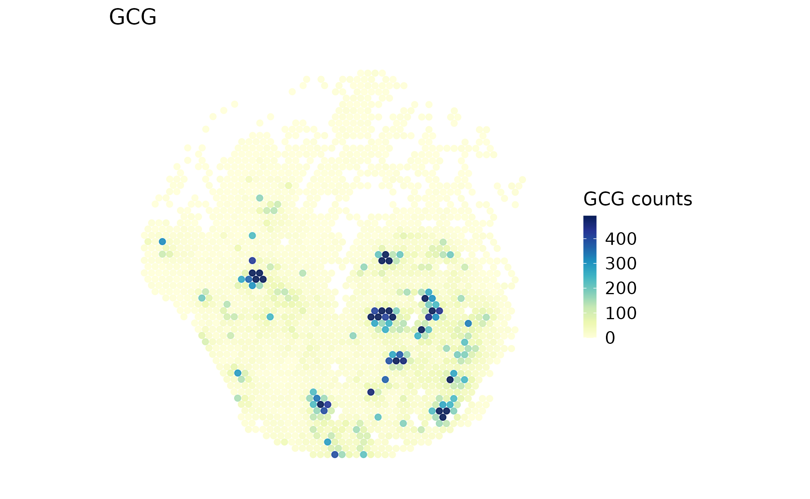

Spatial framework bridges
Source:vignettes/spatial-framework-bridges.Rmd
spatial-framework-bridges.RmdUse this page when an analysis needs a different data container. You will convert a real Visium dataset to SpatialExperiment, verify what survived, convert back to Seurat, and save a reloadable result. A separate Giotto section checks the installed backend before attempting the same task. Conversion does not run either framework’s biological analysis.
Start with the main spatial workflow for analysis, or the platform page for vendor imports and assay/image choices.
Inputs and preservation boundaries
The executable input is the complete bundled
visium_human_pancreas_sub object: 5,000 genes and all 1,986
packaged tissue spots from human PanIN sample GSM8058244, study GSE254829.
The package has already selected genes shared with
panc8_sub; this article performs no additional feature or
spot subsampling. coda_label is supplied microanatomical
annotation, not a predicted cell type.
| Field | Seurat ↔︎ SpatialExperiment | Seurat ↔︎ Giotto |
|---|---|---|
| Expression | One selected assay/layer becomes scop_input; reverse
conversion places it in Seurat counts
|
The official GiottoClass converter controls layer and assay naming |
| IDs and metadata | Expression columns and coordinate rows are aligned by ID;
include_meta = TRUE exports metadata |
Check returned IDs and metadata against the selected input; do not assume names are unchanged |
| Coordinates | Raw coordinates by default; an explicit legacy display export stores an invertible transform | Official converter’s coordinate convention; validate before distance-based analysis |
| Other Seurat content | Does not round-trip images, reductions, graphs, tools, or all assays | Retention follows the installed GiottoClass converter |
| Analysis | No target-framework analysis is run | No Giotto analysis or Python environment is initialized |
The reverse SpatialExperiment bridge treats its selected expression
assay as counts. Therefore this round-trip exports raw counts. Do not
export a normalized layer and then describe the returned
counts layer as raw data.
library(scop)
stopifnot(requireNamespace("SpatialExperiment", quietly = TRUE))
data(visium_human_pancreas_sub)
spatial <- visium_human_pancreas_sub
assay_name <- "Spatial"
image_name <- "slice1"
counts_before <- GetAssayData5(spatial, assay = assay_name, layer = "counts")
raw_before <- SpatialCoordinates(spatial, image = image_name, space = "raw")
stopifnot(
identical(dim(counts_before), c(5000L, 1986L)),
!anyDuplicated(colnames(counts_before)),
setequal(colnames(counts_before), raw_before$data$cell_id)
)
raw_xy <- as.matrix(raw_before$data[colnames(counts_before), c("x", "y")])
input_receipt <- data.frame(
source = "GSE254829 / GSM8058244 / complete bundled object",
features = nrow(counts_before), observations = ncol(counts_before),
assay = assay_name, layer = "counts", image = image_name,
coordinate_space = "raw", coordinate_units = "full-resolution pixels"
)
input_receipt
#> source features observations
#> 1 GSE254829 / GSM8058244 / complete bundled object 5000 1986
#> assay layer image coordinate_space coordinate_units
#> 1 Spatial counts slice1 raw full-resolution pixels
raw_before$source
#> $image
#> [1] "slice1"
#>
#> $coord.cols
#> [1] "x" "y"
#>
#> $image_policy
#> [1] "strict"
#>
#> $coordinate_space
#> [1] "raw"
#>
#> $image_class
#> [1] "VisiumV2"
#> attr(,"package")
#> [1] "Seurat"
#>
#> $image_width
#> [1] 600
#>
#> $image_height
#> [1] 340
#>
#> $scale_name
#> [1] "lowres"
#>
#> $scale_factor
#> [1] 0.078125
#>
#> $coordinate_contract_version
#> [1] 3The dimension assertion protects this particular example. Replace it with your own expected dimensions when adapting the code. The ID check is general: stop and resolve any mismatch instead of assigning coordinates by row position.
Round-trip through SpatialExperiment
spe <- srt_to_spe(
spatial, assay = assay_name, layer = "counts", image = image_name,
include_meta = TRUE, coordinate_space = "raw"
)
spatial_roundtrip <- spe_to_srt(spe, assay = assay_name, layer = "scop_input")
counts_after <- GetAssayData5(spatial_roundtrip, assay = assay_name, layer = "counts")
# Coordinate columns are checked separately because reverse conversion writes x/y.
metadata_columns <- setdiff(colnames(spatial@meta.data), c("x", "y"))
spe_checks <- c(
observation_order = identical(colnames(spatial_roundtrip), colnames(counts_before)),
feature_order = identical(rownames(counts_after), rownames(counts_before)),
counts = isTRUE(all.equal(counts_after, counts_before)),
metadata = isTRUE(all.equal(
spatial_roundtrip@meta.data[, metadata_columns, drop = FALSE],
spatial@meta.data[, metadata_columns, drop = FALSE]
)),
raw_coordinates = isTRUE(all.equal(
as.matrix(spatial_roundtrip@meta.data[, c("x", "y")]), raw_xy,
check.attributes = FALSE
)),
provenance = identical(
spatial_roundtrip@misc$spatial_coordinate_import,
S4Vectors::metadata(spe)$scop_spatial_coordinates
)
)
data.frame(check = names(spe_checks), passed = unname(spe_checks))
#> check passed
#> 1 observation_order TRUE
#> 2 feature_order TRUE
#> 3 counts TRUE
#> 4 metadata TRUE
#> 5 raw_coordinates TRUE
#> 6 provenance TRUE
stopifnot(all(spe_checks))
SummarizedExperiment::assayNames(spe)
#> [1] "scop_input"
SeuratObject::Images(spatial_roundtrip)
#> NULLEvery displayed check must be TRUE. An empty image list
is expected: the lightweight conversion keeps coordinates in metadata
but does not reconstruct the raster. The selected count matrix and
original metadata are checked, not just the number of spots. Existing
Seurat analysis results are outside this bridge’s contract; keep the
original object if you need them.
stopifnot("GCG" %in% rownames(counts_after))
SpatialSpotPlot(
spatial_roundtrip, image = NULL, coord.cols = c("x", "y"),
features = "GCG", assay = assay_name, layer = "counts",
overlay_image = FALSE, palette = "YlGnBu", legend.title = "GCG counts"
)
This is the measured GCG count map after conversion, drawn from preserved raw coordinates without a tissue raster. A spatially localized signal is not by itself a cell-type assignment, and the count range is not normalized expression.
Verify a legacy display export can be inverted
Use raw coordinates for new distance-sensitive work. This compatibility check is useful when an older workflow explicitly expects display-scaled and vertically flipped coordinates.
spe_display <- srt_to_spe(
spatial, assay = assay_name, layer = "counts", image = image_name,
coordinate_space = "legacy_display"
)
display_provenance <- S4Vectors::metadata(spe_display)$scop_spatial_coordinates
display_provenance
#> $source
#> $source$image
#> [1] "slice1"
#>
#> $source$coord.cols
#> [1] "x" "y"
#>
#> $source$image_policy
#> [1] "strict"
#>
#> $source$coordinate_space
#> [1] "legacy_display"
#>
#> $source$image_class
#> [1] "VisiumV2"
#> attr(,"package")
#> [1] "Seurat"
#>
#> $source$image_width
#> [1] 600
#>
#> $source$image_height
#> [1] 340
#>
#> $source$scale_name
#> [1] "lowres"
#>
#> $source$scale_factor
#> [1] 0.078125
#>
#> $source$coordinate_contract_version
#> [1] 3
#>
#>
#> $transform
#> $transform$scale
#> [1] 0.078125
#>
#> $transform$scale_name
#> [1] "lowres"
#>
#> $transform$y_flip
#> [1] TRUE
#>
#> $transform$image_width
#> [1] 600
#>
#> $transform$image_height
#> [1] 340
#>
#> $transform$raw_x_col
#> [1] "x"
#>
#> $transform$raw_y_col
#> [1] "y"
#>
#> $transform$image_class
#> [1] "VisiumV2"
#> attr(,"package")
#> [1] "Seurat"
#>
#> $transform$coordinate_contract_version
#> [1] 3
from_display <- spe_to_srt(spe_display, assay = assay_name, layer = "scop_input")
display_error <- max(abs(
as.matrix(from_display@meta.data[, c("x", "y")]) - raw_xy
))
data.frame(max_raw_coordinate_error = display_error, tolerance = 1e-8)
#> max_raw_coordinate_error tolerance
#> 1 0 1e-08
stopifnot(is.finite(display_error), display_error < 1e-8)The error is measured in original pixel units and should be zero or numerical round-off. Preserve the saved transform when passing this object to another person. External SpatialExperiment objects without SCOP provenance are treated as raw coordinates in their supplied units; verify those units yourself.
Optional: round-trip through Giotto
SCOP chooses the official GiottoClass v4/v5 converters
for the installed Seurat major version. A single image can be resolved
automatically; multiple images require image =. Normalize
before export because the official reverse converter needs a nonempty
normalized layer. This does not replace raw counts.
The following code is evaluated: it records backend availability,
runs the conversion if compatible converters are installed, and reports
any error. It never installs a backend during rendering. A missing
backend is reported as not_run, and a failed preservation
check as failed, never completed. Install
GiottoClass separately following the official Giotto
instructions and rerun this section to validate your exact package
versions.
seurat_major <- as.integer(strsplit(as.character(packageVersion("Seurat")), "\\.")[[1]][1])
converter_suffix <- if (seurat_major >= 5L) "V5" else "V4"
converters <- paste0(c("seuratToGiotto", "giottoToSeurat"), converter_suffix)
giotto_available <- requireNamespace("GiottoClass", quietly = TRUE)
giotto_compatible <- giotto_available && all(vapply(
converters, exists, logical(1), envir = asNamespace("GiottoClass"), inherits = FALSE
))
giotto_result <- NULL
giotto_receipt <- data.frame(
backend = "GiottoClass",
version = if (giotto_available) as.character(packageVersion("GiottoClass")) else NA_character_,
status = "not_run",
reason = if (!giotto_available) "GiottoClass is not installed" else
if (!giotto_compatible) "Required converters are absent" else "Ready to attempt conversion"
)
if (giotto_compatible) {
giotto_result <- tryCatch({
giotto_input <- Seurat::NormalizeData(spatial, assay = assay_name, verbose = FALSE)
native <- srt_to_giotto(giotto_input, image = image_name)
restored <- giotto_to_srt(native)
restored_assay <- SeuratObject::DefaultAssay(restored)
restored_counts <- GetAssayData5(restored, assay = restored_assay, layer = "counts")
stopifnot(setequal(colnames(restored_counts), colnames(counts_before)),
setequal(rownames(restored_counts), rownames(counts_before)))
restored_counts <- restored_counts[rownames(counts_before), colnames(counts_before)]
restored_xy <- SpatialCoordinates(restored, space = "raw")$data
checks <- c(
counts = isTRUE(all.equal(restored_counts, counts_before)),
coda_annotation = "coda_label" %in% colnames(restored@meta.data) &&
identical(as.character(restored@meta.data[colnames(counts_before), "coda_label"]),
as.character(spatial$coda_label)),
coordinates = isTRUE(all.equal(
as.matrix(restored_xy[colnames(counts_before), c("x", "y")]), raw_xy,
check.attributes = FALSE
))
)
print(data.frame(check = names(checks), passed = unname(checks)))
stopifnot(all(checks))
list(native = native, restored = restored, assay = restored_assay, checks = checks,
metadata_columns_retained = intersect(colnames(spatial@meta.data), colnames(restored@meta.data)),
metadata_columns_missing = setdiff(colnames(spatial@meta.data), colnames(restored@meta.data)))
}, error = function(e) e)
if (inherits(giotto_result, "error")) {
giotto_receipt$status <- "failed"
giotto_receipt$reason <- conditionMessage(giotto_result)
giotto_result <- NULL
} else {
giotto_receipt$status <- "completed"
giotto_receipt$reason <- "Conversion and count, annotation, and coordinate checks passed"
print(giotto_result[c("metadata_columns_retained", "metadata_columns_missing")])
}
}
giotto_receipt
#> backend version status reason
#> 1 GiottoClass <NA> not_run GiottoClass is not installedA successful conversion receipt verifies those named checks only.
Read the metadata retention lists before relying on other columns. If
this section reports failed, resolve its message and rerun
before using the converted object for analysis. Even
completed does not mean that Giotto’s own analysis or
plotting pipeline has run.
Save, reload, and recheck
Save both the portable object and the receipt. The example uses a
temporary directory so a build does not overwrite your work. For a
persistent analysis, set SCOP_BRIDGE_OUTPUT_DIR to a new
project directory before running it.
output_dir <- Sys.getenv("SCOP_BRIDGE_OUTPUT_DIR", file.path(tempdir(), "scop-bridges"))
dir.create(output_dir, recursive = TRUE, showWarnings = FALSE)
bridge_file <- file.path(output_dir, "panin-spatialexperiment-roundtrip.rds")
bridge_bundle <- list(
spatial_experiment = spe, seurat = spatial_roundtrip,
input = input_receipt, checks = spe_checks, giotto_receipt = giotto_receipt,
giotto = giotto_result, session = utils::sessionInfo()
)
saveRDS(bridge_bundle, bridge_file)
reloaded <- readRDS(bridge_file)
reload_checks <- c(
file_exists = file.exists(bridge_file),
observations = identical(colnames(reloaded$seurat), colnames(spatial)),
counts = isTRUE(all.equal(
GetAssayData5(reloaded$seurat, assay = assay_name, layer = "counts"), counts_before
)),
coordinates = identical(SpatialExperiment::spatialCoords(reloaded$spatial_experiment),
SpatialExperiment::spatialCoords(spe)),
receipt = identical(reloaded$checks, spe_checks)
)
data.frame(check = names(reload_checks), passed = unname(reload_checks))
#> check passed
#> 1 file_exists TRUE
#> 2 observations TRUE
#> 3 counts TRUE
#> 4 coordinates TRUE
#> 5 receipt TRUE
stopifnot(all(reload_checks))The saved seurat object can be passed directly to the
earlier plot call. Reloading or plotting does not rerun conversion,
normalization, or a model.
Adapt to your data and recover from errors
- Replace the
data()input with your imported Seurat object and choose one image withSeuratObject::Images(). Select its matching assay and inspectSeuratObject::Layers()before choosingcounts. - Keep the entire selected image unless exclusion has a scientific/QC reason. With a multi-image source, derive expected IDs from the selected image and compare the exported object with that same image’s expression columns.
- Replace the fixed example dimension check and
GCGwith your expected dimensions and an actual feature. Keep the ID, count, and coordinate checks. - Record platform, units, sample, assay/layer, image, input selection, package versions, and whether each bridge completed. Keep the original Seurat object for images and analysis fields that do not cross the bridge.
| Symptom | Check and recovery |
|---|---|
| SpatialExperiment is missing | Install it with Bioconductor in your analysis environment, restart R, and rerun the input section |
| Multiple spatial images | Supply one valid image =; export each sample separately
rather than merging unrelated coordinate systems |
| IDs do not match | Compare colnames() and coordinate row names; align by
verified IDs, never rename by row position |
| An assay/layer is missing | Inspect Assays()/Layers(); restore the
intended raw count source instead of relabeling normalized data |
| Display import needs a scale or height | Restore the original SCOP provenance or export raw coordinates again; do not invent a transform |
| Giotto conversion fails on normalized data | Run NormalizeData() on the input count assay and check
compatible converter exports and versions |
| No image after the SPE round-trip | Expected: use metadata coordinates with image = NULL,
or retain the original Seurat object when a raster is required |
data.frame(
package = c("scop", "Seurat", "SeuratObject", "SpatialExperiment"),
version = vapply(c("scop", "Seurat", "SeuratObject", "SpatialExperiment"),
function(p) as.character(utils::packageVersion(p)), character(1))
)
#> package version
#> scop scop 0.9.2
#> Seurat Seurat 5.6.0
#> SeuratObject SeuratObject 5.4.0
#> SpatialExperiment SpatialExperiment 1.22.0Build provenance
This receipt belongs to the actual rendered source and retained observations. Save it beside the exported object when adapting the workflow.
source_revision <- Sys.getenv("GITHUB_SHA")
if (!nzchar(source_revision) && nzchar(Sys.which("git"))) {
source_revision <- system2("git", c("rev-parse", "HEAD"), stdout = TRUE,
stderr = FALSE)[1]
}
build_receipt <- data.frame(
article = "spatial-framework-bridges", built_utc = format(Sys.time(), tz = "UTC", usetz = TRUE),
source_revision = source_revision,
source_has_local_changes = if (nzchar(Sys.which("git")))
length(system2("git", c("status", "--porcelain"), stdout = TRUE,
stderr = FALSE)) > 0 else NA,
article_md5 = unname(tools::md5sum(knitr::current_input(dir = TRUE))),
R = as.character(getRversion()), scop = as.character(utils::packageVersion("scop")),
retained_observations = ncol(spatial_roundtrip), genes = nrow(spatial_roundtrip)
)
build_receipt
#> article built_utc
#> 1 spatial-framework-bridges 2026-10-10 12:10:32 UTC
#> source_revision source_has_local_changes
#> 1 151e7134c597a318db23aacdc01739f82fa44758 FALSE
#> article_md5 R scop retained_observations genes
#> 1 0fc22a1b03cb3a6e77a033e054ff09d1 4.6.1 0.9.2 1986 5000
utils::write.csv(build_receipt, file.path(output_dir, "build-receipt.csv"), row.names = FALSE)
writeLines(capture.output(sessionInfo()), file.path(output_dir, "session-info.txt"))